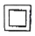
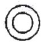
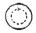
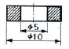
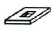
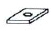
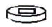
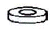
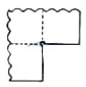
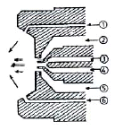

자동차차체수리기능사 (2008-03-30 기출문제)
1과목: 자동차공학
1. 자동차의 차체 모양에 따른 분류로 차체 후부가 계단 형상으로 되어 있으며, 차실과 트렁크부의 공감이 커서 승용차의 표준형인 세단(Sedan)의 한 종류는?
- 해치백(Hatch Back) 세단
- 패스트백(Fast Back) 세단
- 플레인백(Plain Back) 세단
- 노치백(Notch Back) 세단
(정답률: 74%)

2. 차체(body)의 도어(door)가 차량의 측면을 따라 개폐되는 도어 형식은?
- 힌지(hinge)형 개폐 도어
- 걸링(gulling) 도어
- 슬라이딩(sliding) 도어
- 여닫이 도어
(정답률: 87%)
3. 어떤 물질의 질량과 이것의 같은 부피를 가진 표준 물질의 질량과의 비는?
- 비중
- 무게
- 면적
- 체적
(정답률: 86%)
4. 다음 중 물체의 부피를 표시하는 단위가 아닌 것은?
- ℓ
- cm3
- ㏄
- Ω
(정답률: 95%)
5. 알루미늄으로 제작된 실린더 헤드에 균열이 생겼다면 다음 중 어떤 용접이 가장 적합한가?
- 전기피복 아크 용접
- 불활성가스 아크 용접
- 산소-아세틸렌가스 용접
- LPG 용접
(정답률: 72%)
6. 다음 중 실린더 블록에 관한 설명으로 옳은 것은?
- 실린더는 피스톤 행정의 약 2배의 길이로 열팽창을 고려해 타원형으로 되어 있다.
- 실린더와 실린더 블록을 별개로 만드는 경우에는 실린더 라이너를 설치한다.
- 크랭크 케이스는 크랭크축이 설치되는 실린더 블록의 아래 부분을 말하며 오일팬은 제외된다.
- 건식 라이너는 냉각수와 직접 접촉되어 냉각효과가 뛰어나다.
(정답률: 67%)
7. 브레이크가 작동되었음을 알리는 등은?
- 브레이크 오일 경고등(brake oil warning lamp)
- 계기등(instrument lamp)
- 후진등(back up lamp)
- 제동등(stop lamp)
(정답률: 98%)
8. 자동 변속기에서 엔진의 회전력을 받아 구동력을 증대시키는 장치는?
- 유압펌프
- 토크 컨버터
- 엑츄에이터
- 메카트로닉스
(정답률: 90%)
9. 충분한 강성과 강도가 요구되며, 자동차의 기본 골격이 되는 부분은?
- 패널(panel)
- 엔진(engine)
- 프레임(frame)
- 범퍼(bumper)
(정답률: 94%)
10. 시스템 내의 동작물질이 한 상태에서 다른 상태로 변화하는 것은?
- 상태변화
- 경로
- 가역과정
- 이상과정
(정답률: 96%)
11. 아래와 같은 정면도에 해당되는 평면도는?(문제 오류로 그림이 없습니다. 정답은 4번입지다. 정확한 그림 내용을 아시는분 께서는 관리자 메일 또는 자유게시판으로 부탁 드립니다.)



(정답률: 60%)
12. 용접 및 가스 절단시 산화물이나 기타 유해물을 분리 제거하기 위해 사용하는 것은?
- 자동역류 방지장치
- 호스 체크밸브
- 봄 트롤리
- 플럭스
(정답률: 82%)
13. 범퍼의 재료에 쓰이지 않는 플라스틱의 재료는?
- ABS
- PC
- PUR
- TPUR
(정답률: 74%)
14. 용접 작업시 용접 홈을 만드는 이유가 될 수 없는 것은?
- 용입을 좋게 하기 위해서
- 용접 이음 효율을 높이기 위해서
- 용접 변형을 적게 하기 위해서
- 용접봉의 소비를 적게 하기 위해서
(정답률: 87%)
15. 불변강인 엘린바아의 주요 성분 원소가 아닌 것은?
- 니켈
- 크롬
- 인
- 철
(정답률: 67%)
16. 알루미늄의 특성으로 틀린 것은?
- 용융점이 철보다 높다.
- 무게는 철의 약 1/3이다.
- 열전달이 철보다 높다.
- 전기 도전율이 구리보다 낮다.
(정답률: 73%)
17. 전기저항 용접법 중 주로 기밀, 수밀, 유밀성을 필요로 할 때 가장 적합한 용접은?
- 점용접
- 시임용접
- 플래쉬용접
- 프로젝션용접
(정답률: 53%)
18. 순철의 자기변태점 온도는?
- 721℃
- 768℃
- 913℃
- 1400℃
(정답률: 76%)
19. 용접기에서 1차선에 비하여 2차선을 굵은 선으로 하는 이유는?
- 전선의 유연성을 좋게 하기 위해서이다.
- 2차 전류가 1차 전류보다 크기 때문이다.
- 2차 전압이 1차 전압보다 높기 때문이다.
- 2차선의 열전도를 보다 크게 하기 위해서이다.
(정답률: 77%)
20. 다음 철광석 중 철분이 가장 많은 것은?
- 자철광
- 적철광
- 갈철광
- 능철광
(정답률: 88%)
2과목: 자동차차체정비
21. 산소절단의 원리를 설명한 것으로 옳은 것은?
- 산소절단은 산소와 철의 화학 작용에 의한다.
- 산소 절단시의 화학 반응열은 예열에 이용된다.
- 2차 전압이 1차 전압보다 높기 때문이다.
- 2차선의 열전도를 보다 크게 하기 위해서이다.
(정답률: 64%)
22. 기계 부품으로 사용될 재료의 조건으로 틀린 것은?
- 쉽게 구할 수 있는 재료
- 열에 대한 변형이 용이한 재료
- 기계의 성능을 장기간 유지 할 수 있는 재료
- 가공이 용이한 재료
(정답률: 78%)
23. 금속 재료의 기계적 성질을 옳게 설명한 것은?
- 금속재료가 가지고 있는 물리적 성질
- 금속재료가 가지고 있는 화학적 성질
- 금속재료가 가지고 있는 각 원소의 성질
- 외부로부터 힘을 가했을 때 나타나는 성질
(정답률: 64%)
24. 아래와 같은 단면도는 어떤 물체의 단면도인가?





(정답률: 82%)
25. 레이저 빛 대신 전자파(microwave)를 이용하여 전자파의 증폭발진을 일으켜 용접하는 것은?
- 레이저(laser)빔 용접
- 메이저(maser) 용접
- 전자빔 용접
- 프로젝션 용접
(정답률: 68%)
26. 도막을 형성하는 주 요소로 아크릴, 우레탄, 에폭시, 멜라민 등으로 구성되어 있는 것은?
- 수지
- 안료
- 용제
- 첨가제
(정답률: 78%)
27. 보디의 접합시 전기저항 스포트 용접을 하는 이유가 아닌 것은?
- 변형 발생이 일어나지 않는다.
- 기계적 성질을 변화 시키지 않는다.
- 용접부의 균열, 내부응력 발생이 없다.
- 모재와 동등한 상태를 유지 할 필요가 없다.
(정답률: 83%)
28. 기계 판금의 굽힘 기계 종류 중 판금재료의 강성을 증가시키거나 판금 공작물의 형상을 아름답게 하기 위하여 홈을 만드는데 사용되는 기계는?
- 포밍머신
- 탄젠트 밴더
- 폴딩머신
- 비딩머신
(정답률: 72%)
29. 차체 손상진단에서 착안해야 할 점과 관계가 없는 것은?
- 장치의 관성부분
- 형상의 변화부분
- 단면 형상의 변화부분
- 지점 부분
(정답률: 73%)
30. 수직 높이의 측정을 위하여 설정한 기본 가상축은?
- 데이텀라인
- 레벨
- 센터라인
- 치수도
(정답률: 80%)
31. 트렁크 도어의 구조는 프레스 가공한 얇은 강판으로 안쪽에서 프레임을 포개어 점 용접한 것이다. 트렁크 도어 개폐시 균형을 잡기 위해 사용되는 것은?
- 트렁크 도어 힌지
- 토션 바
- 도어 록
- 도어 cpr
(정답률: 74%)
32. 프론트 도어 장착시 펜더와 리어 도어, 사이드 실등과 단차나 간격이 맞지 않은 경우 점검해야 될 부위가 아닌 것은?
- 도어의 상, 하 힌지 부착 상태 점검
- 센터 필러부에 부착된 스트라이커의 위치 점검
- 도어의 인너 핸들 점검
- 프론트 도어 필러의 변형 상태 점검
(정답률: 70%)
33. 손상된 패널의 수정 방법 중 훅을 사용하여 수정하는 방법은?
- 둘리, 해머를 이용한 수정 방법
- 인장에 의한 수정 방법
- 덴트 풀러에 의한 수정 방법
- 강판의 수축에 의한 수정 방법
(정답률: 61%)
34. 자동차 보수도장 작업 중 퍼티의 기본 목적은?
- 충진성
- 부착성
- 습도조절
- 색상 향상
(정답률: 65%)
35. 차체를 고정 할 수 있는 부위가 아닌 것은?
- 사이드 씰 하부 플랜지
- 사이드 멤버
- 압력 조절
- 에어공급 장치
(정답률: 70%)
36. 에어 트랜스포머(air transformer)의 기능이 아닌 것은?
- 수분제거
- 유분제거
- 압력조절
- 먼지제거
(정답률: 67%)
37. 차체 프레임 교정기의 구성장치가 아닌 것은?
- 인장 장치
- 고정 장치
- 절단 장치
- 에어공급 장치
(정답률: 48%)
38. 패널의 절단 및 이음 방법의 설명 중 잘못된 것은?
- 절단 이음 부위는 반드시 겹치기 용접만 한다.
- 절단은 가능한 좁은 부위를 선택한다.
- 신품으로 교환할 때는 조금 길게 잘라서 겹친 부분에서 두장을 한번에 자른다.
- 겹치기 용접은 스포트 용접도 가능하다.
(정답률: 55%)
39. 도장의 결함 중 오랜지필 결함의 원인은?
- 증발 속도가 너무 빠른 신너를 사용했을 경우
- 압축 공기에 물이나 오일이 포함되어 건으로 도료와 함께 토출될 경우
- 오일, 왁스 등이 표면에 붙어 있을 경우
- 스프레이건의 청소가 부족했을 경우
(정답률: 69%)
40. 구도막 제거와 철판 면 녹 제거에 사용되는 동력공구로 가장 적합한 것은?
- 에어 샌더
- 에어 치즐
- 벨트 샌더
- 오비탈 샌더
(정답률: 53%)
3과목: 안전관리
41. 차체 박판의 변형된 모양이 작은 원으로 변형되었을 경우 어떤 방법으로 변형 교정을 하는 거의 바람직한가?
- 박판 점 수축법
- 박판 직선 수축법
- 박판 기계적 처리법
- 롤러 가공법
(정답률: 72%)
42. 도료의 수지 성분이 열과 빛에 의해 반응하거나 경화제의 첨가 등으로 인하여 반응한 후 경화되어 도막을 형성하는 건조 기구(mechanism)는?
- 휘발 건조
- 산화 건조
- 중합 건조
- 융해 냉각 건조
(정답률: 62%)
43. 트램 트랙킹 게이지의 용도와 무관한 것은?
- 대각선이나 특정 부위의 길이 측정
- 엔진룸, 윈도우 부분의 개구부 변형 측정
- 좌우 비대칭 보디의 변형 측정
- 바퀴의 정렬
(정답률: 39%)
44. 아래 그림과 같이 직각으로 두 방향을 굽힐 때 노치부에 구멍을 만드는 이유는?

- 재료를 절약하기 위해서
- 강도를 증가시키기 위해서
- 균열을 막기 위해서
- 납땜을 쉽게 하기 위해서
(정답률: 84%)
45. 다음 중 보디 프레임 수정기의 종류에 속하지 않는 것은?
- 이동식 프레임 수정기
- 고정식 랙형 프레임 수정기
- 바닥면식 간이형 프레임 수정기
- 가변식 프레임 수정기
(정답률: 80%)
46. 자동차의 차체는 철 금속의 어떤 성질을 이용한 것인가?
- 가공경화
- 소성
- 탄성
- 취성
(정답률: 59%)
47. 파손 분석을 하는 요령 중 틀린 것은?
- 응력이 완화되는 부위
- 충격이 직접 가해진 부위
- 충격이 가해진 곳의 내측 부위
- 플라스틱 등 파손이 되기 쉬운 부품
(정답률: 73%)
48. 프레임 센터링 게이지의 설치방법 중 틀린 것은?
- 게이지 1개가 1조이다.
- 차체 프레임의 행거 로드 높이를 수평으로 조절하여 건다.
- 게이지를 부착하려면 게이지 홀, 스프링 훅, 마그네틱을 사용할 수 있다.
- 비대칭 차체와 좌, 우 대칭인 차체를 구분해야 한다.
(정답률: 72%)
49. 아래 그림은 스프레이 건의 에어캡을 확대한 것이다. 도료가 지나가는 통로는?

- ①과 ⑥
- ②과 ⑤
- ③과 ④
- ②과 ⑥
(정답률: 74%)
50. 금속의 냉간가공 특징 설명으로 틀린 것은?
- 경도 및 인장강도가 증가된다.
- 연신율 및 충격치가 감소한다.
- 가공면이 아름답고 정밀한 모양으로 만들 수 있다.
- 도전율이 감소한다.
(정답률: 57%)
51. 자동차에서 엔진오일압력 경고 등의 식별 색상으로 가장 많이 사용되는 색은?
- 녹색
- 황색
- 청색
- 적색
(정답률: 79%)
52. 드릴링 머신의 안전수칙 설명 중 틀린 것은?
- 구멍 뚫기를 시작하기 전에 자동이송장치를 쓰지말 것
- 드릴을 회전시킨 후 테이블을 조정하지 말 것
- 드릴을 끼운 뒤에는 척키를 반드시 꽃아 놓을 것
- 드릴 회전 중에는 쇳밥을 손으로 털거나 불지 말 것
(정답률: 82%)
53. 기관에서 크랭크축의 휨 측정시 가장 적합한 것은?
- 스프링 저울과 V블록
- 버니어캘리퍼스와 곧은자
- 마이크로미터와 다이얼게이지
- 다이얼게이지와 V블록
(정답률: 73%)
54. 줄 작업에서 줄에 손잡이를 꼭 끼우고 사용하는 이유는?
- 평행을 유지하기 위해
- 열의 전도를 막기 위해
- 보관에 편리하도록 하기 위해
- 사용자에게 상처를 입히지 않기 위해
(정답률: 90%)
55. 어느 정비 공장의 연 근로시간수가 150,000시간이며 근로 총 손실수가 150일 이라면 강도율은 약 얼마인가?
- 10
- 1
- 0.1
- 0.001
(정답률: 58%)
56. 용접작업시의 보호구에 대한 설명으로 틀린 것은?
- 보호구는 작업의 관계없이 아무것이나 착용하면 된다.
- 필요한 수량을 준비하여 항상 사용 가능 하도록 정비하여 둔다.
- 가능한 한 작업자 개개인이 전용 보호구를 사용하도록 한다.
- 보호구의 올바른 사용법을 익혀둔다.
(정답률: 95%)
57. 차체가 부식 및 변색 될 우려가 있는 지역을 운행한 후에는 조속히 세차를 하여야 한다. 이에 해당되지 않는 것은?
- 바닷물에 접했을 때
- 눈이나 결빙으로 인한 도로 빙결 방지제 도포구간 운행 후
- 공장매연, 콜타르 지역 통과 후
- 비포장 도로 운행 후
(정답률: 89%)
58. 작업장 내 조명방법에 속하지 않는 것은?
- 직접조명
- 간접조명
- 전체조명
- 국부 조명
(정답률: 52%)
59. 차체수리 작업에 사용하는 공구 중 스패너 렌치의 사용시 주의사항으로 틀린 것은?
- 스패너 작업 시 큰 힘으로 작업할 경우 스패너를 미는 방향으로 작업한다.
- 볼트와 수평의 상태로 작업을 한다.
- 스패너 자루에 파이프 등을 끼워 사용하지 않는다.
- 볼트와 동일한 규격을 사용한다.
(정답률: 92%)
60. 전기용접 작업할 때에 주의사항 중 틀린 것은?
- 피부를 노출하지 않도록 한다.
- 슬랙(slag) 제거 때는 보안경을 착용하고 한다.
- 가열된 용접봉 홀더는 물에 넣어 냉각시킨다.
- 우천시 옥외작업을 금한다.
(정답률: 88%)